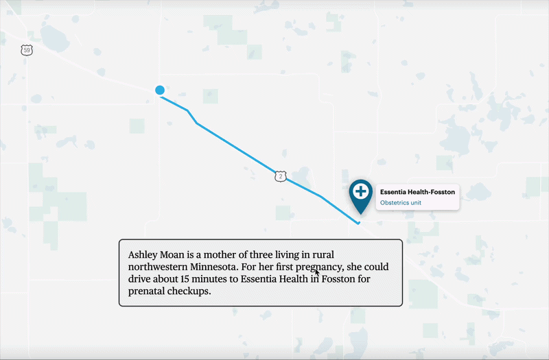

Data analysis · Mapping · Scrollytelling
Minnesota's disappearing delivery wards leave pregnant patients far from care
- Conducted geospatial drive-time analysis of Minnesota's obstetrics closures using QGIS scripts and Census data, which guided reporting and interviewing
- Designed and built responsive, animated hero map that follows one mother's drive as the reader scrolls
QGIS · Svelte